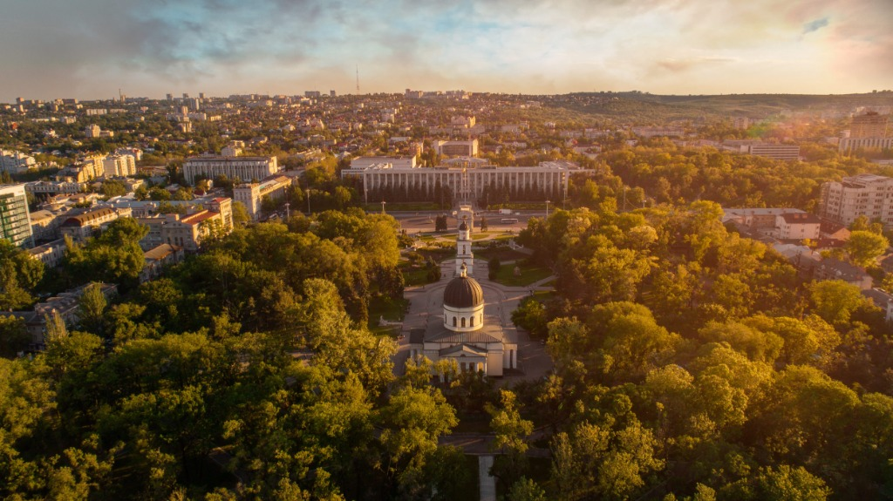

Partea 1 - Republica Moldova
Republica Moldova este o tara situata in Europa de Est, renumita pentru ospitalitatea localnicilor, podgoriile sale spectaculoase si bogata sa mostenire culturala si istorica.

Steagul Republicii Moldova
Obiective turistice importante
- Orheiul Vechi: Complex arheologic si manastire rupestra sapata in stanca de calcar.
- Cetatea Soroca: Fortareata medievala de piatra construita de Stefan cel Mare pe malul Nistrului.
- Galeriile Subterane Cricova: Oras vinicol subteran urias cu strazi subterane si colectii valoroase.
- Manastirea Capriana: Unul dintre cele mai vechi si prestigioase asezaminte monahale din tara.
- Castel Mimi: Bijuterie arhitecturala din secolul al XIX-lea dedicata vinificatiei si culturii.
Inapoi sus